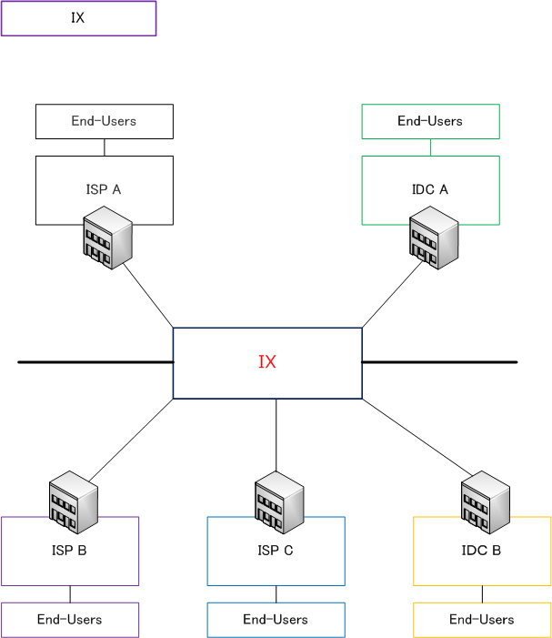

IX ( Internet Exchange )
IX（Internet Exchange）とは
IX（インターネットエクスチェンジ）は、正確にはインターネット相互接続点を意味する言葉のことですが、 IXは、複数のIDC（インターネットデータセンター）や ISP（インターネットサービスプロバイダー）同士を 相互接続するための施設や相互接続サービスを提供する事業者のことを指します。アイエックスとも呼びます。

異なるIDCやISP同士が相互に通信を行うためには、接続先ごとにネットワーク回線を用意する必要があるが IXを利用すれば各IDCやISPはIXとの回線接続だけで、IXに接続している他のIDCやISPと相互接続できます。 ISPはIXを利用して相互にピアリングを行うことでトランジット経由からIXに振り分けて通信できることから トランジットのコストを下げられますし、上位ISPの障害等の影響を受けることなく通信経路を確保できます。
| 関連用語 | 説明 |
|---|---|
| ピアリング | ピアリングとは、ISP同士が相互にネットワーク接続して、BGPによる経路情報の交換をして 相互にトラフィックを交換しあうこと。相互の利益になることから、一般的に無償である。 |
| トランジット | トランジットとは、あるASが別のASに対してインターネット全体への接続性を提供する方法の ことであり、一般的に有償のサービスとして提供される。トラフィックが増えるほど費用増。 |
商用IXとして、日本を代表する3大IXにはJPIX、BBIX、JPNAPがあります。学術研究を目的とするIXには NSPIXPがあります。IXに接続するためには専用の通信機器やネットワーク回線を準備する必要があるので 多額の初期費用とランニングコストが必要です。ただし、データセンター事業者の中にはデータセンターの 構内にIXの接続設備が設置されていて、IXへの接続経路を利用者に有償にて提供している場合があります。